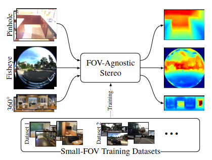
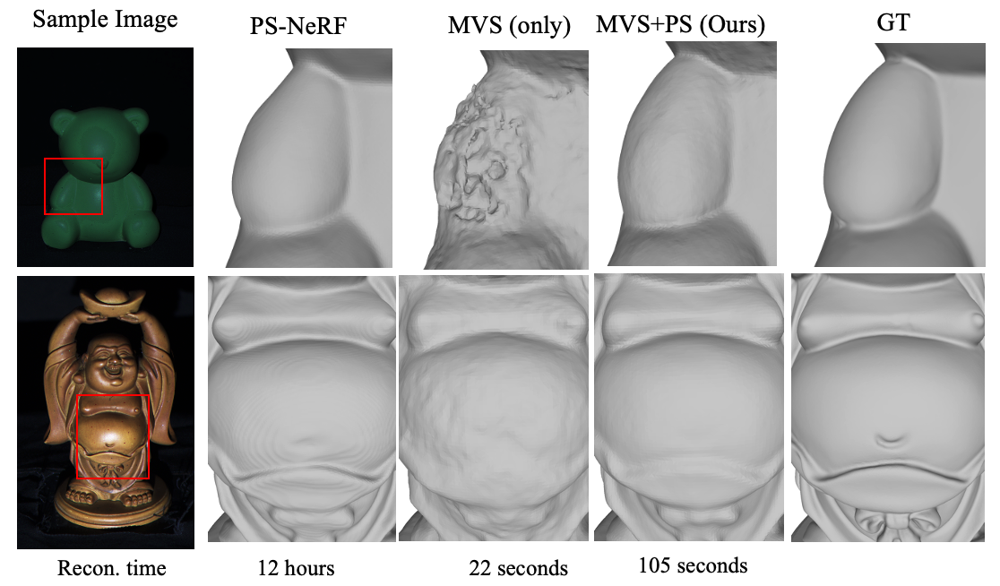
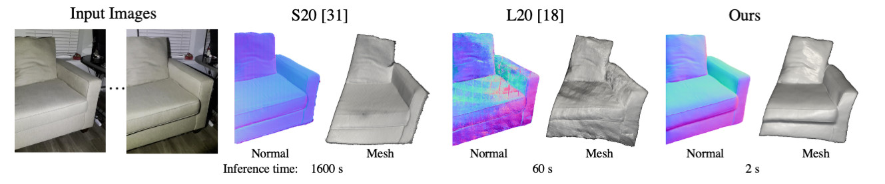
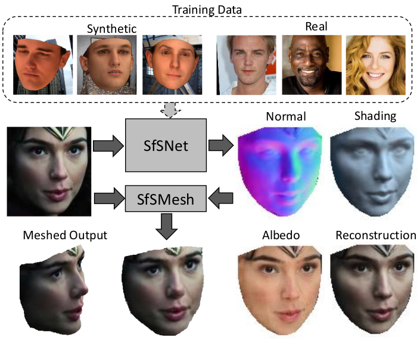

Publications

Field-of-View Agnostic Depth Estimation for Cross-Dataset Generalization
Daniel Lichy, Hang Su, Abhishek Badki, Jan Kautz, Orazio Gallo
International Conference on 3D Vision 2024 (Oral)

MVPSNet: Fast Generalizable Multi-view Photometric Stereo
Dongxu Zhao, Daniel Lichy, Pierre-Nicolas Perrin, Jan-Michael Frahm, Roni Sengupta
ICCV 2023

Fast Light-Weight Near-Field Photometric Stereo
Daniel Lichy, Roni Sengupta, David Jacobs
CVPR 2022

Shape and Material Capture at Home
Daniel Lichy, Jiaye Wu, Roni Sengupta, David Jacobs
CVPR 2021

SfSNet: Learning Shape, Reflectance and Illuminance of Faces in the Wild
Roni Sengupta, Daniel Lichy, Angjoo Kanazawa, Carlos D. Castillo, David Jacobs
IEEE Transactions on Pattern Analysis and Machine Intelligence (TPAMI) 2020